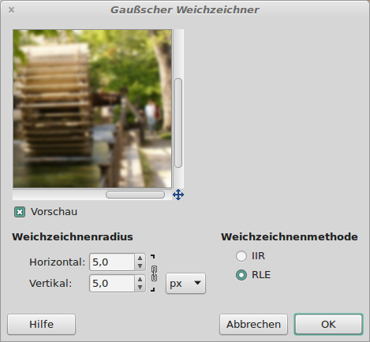
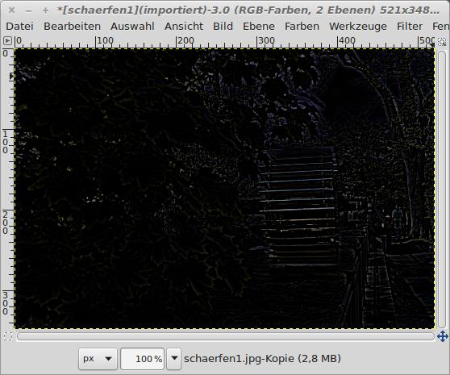

Hintergrundwissen - Manuell schärfen
Wie entsteht eigentlich der optische Eindruck der Schärfe?
Hier wollen wir das Bild Schritt für Schritt von Hand schärfen,
also das tun, was sonst der Filter für uns erledigt.
Mit dem Ebenenwerkzeug wird eine Kopie erstellt, die dann über
Filter →
Weichzeichnen →
Gaußscher Weichzeichner
weichgezeichnet wird.

|
Abb. 2: Gaußscher Weichzeichner
|
Im Ebenen-Werkzeug wird nun die weichgezeichnete Ebene mid der darunter liegenden Original Ebene
über die Funktion "Abziehen" verbunden.

|
Abb. 3: Ebenen-Werkzeug (abziehen)
|
Das Ergebnis enhält dann die Unterschiede, die durch das Weichzeichnen entstanden sind und sieht dann so aus.

|
Abb. 4: Das Differenz-Abbild
|
Im Ebenen-Werkzeug wird über das Kontext-Menü (rechte Maustaste) die Auswahl
Neu aus Sichtbarem
gewählt und die Ebene mit der weichgezeichneten Kopie gelöscht.

|
Abb. 5: Neue Ebene aus Sichtbarem wurde erstellt.
|
Die obere Ebene wird nun durch den Modus "Addidtion" mit der darunterliegenden verknüpft.

|
Abb. 5: Als Ebenenmodus wird "Addition" eingestellt.
|
Dadurch erhalten wir ein geschärftes Bild:

|
| Abb. 5: Und so sieht das Ergebnis aus.
|
© 2009-2017 Michael Roppel